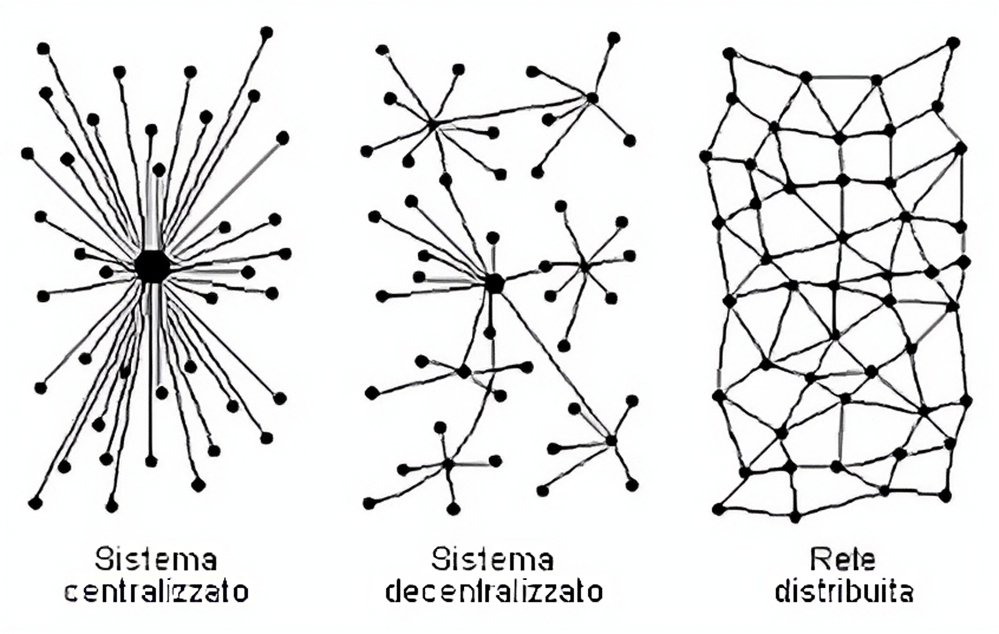

PROGETTAZIONE E REALIZZAZIONE DI UN WEBSITE SU CRIPTOVALUTE
← Fondamenti e Struttura delle DLT →
È possibile affermare che la maggior parte delle criptovalute (ad es. Bitcoin, Ethereum, Monero, Dash, Solana, queste le più note, ma lo stesso avviene anche per buona parte delle meno conosciute e diffuse), adotta il protocollo blockchain come infrastruttura software di funzionamento del sistema.
Tale tecnologia consiste in un registro digitale costituito da blocchi di dati concatenati e successivi fra loro, organizzato secondo un modello distribuito (DLT).
Le DLT “Distributed ledger technologies” sono definite dal nostro ordinamento come:
“tecnologie e protocolli informatici che usano un registro condiviso, distribuito, replicabile, accessibile simultaneamente da più utenti, architetturalmente decentralizzato su basi crittografiche, tali da consentire la registrazione, la convalida, l’aggiornamento e l’archiviazione di dati sia in chiaro che ulteriormente protetti da crittografia verificabili da ciascun partecipante, non alterabili e non modificabili”
cfr. l’art. 8 ter della legge n. 12/2019.
Le caratteristiche principali delle DLT sono:
1) Distribuzione: I dati sono copiati e sincronizzati tra tutti i partecipanti alla rete, garantendo trasparenza
2) Decentralizzazione: il controllo e il processo decisionale non sono concentrati in un'unica entità ma risultano distribuiti tra diversi nodi o partecipanti di una rete.
3) Tipologia di rete: il sistema si divide in permissionless, in cui essendoci decentralizzazione, chiunque puo accedere senza autorizzazioni, e in permissioned, cioè un compromesso tra una rete centralizzata e una permissionless, caratterizzato da un accesso alla rete limitato, controllato da un atorità centralizzata e in cui i partecipanti devono essere autorizzati a unirsi alla rete.
4) Sicurezza: l'uso della crittografia garantisce l'integrità e l'autenticità delle transazioni registrate.

Fonte: Consob. Link: consob.it
proseguire su Funzionamento della blockchain
Fonte background:Freepik. link:freepik.com